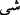

Rivâyete göre Firavun’un kavmi arasında azgınlar ona şöyle dediler: “Biz, korkulan
ve sakınılan çocuğun bu olduğunu zannediyor, senden korkulduğu için onun denize
atıldığını düşünüyoruz. Sen onu öldür.” Bunun üzerine Firavun onu öldürmeğe karar
verdi. Karısı Âsiye ona dedi ki: “Bu çocuk, İsrâiloğullarından değildir.” Kendisine
“Bunu nereden biliyorsun?” diye sorulunca, şöyle dedi: “İsrâloğulları evlâdları
üzerinde çok titrerler; öldürülme korkusuyla çocuklarını gizlerler. Dolayısıyla onlardan
bir annenin kendi çocuğunu eliyle denize atacağı nasıl düşünülebilir.” Yahud da Âsiye
Firavun’a şöyle demiştir: “Bu çocuk büyüktür. Kâhinlerin sana haber vermesinden önce
dünyaya gelmiştir. Dolayısıyla senin mülküne son verecek olan çocuk bu değildir.
Asiye, çocuğu kurtarma delillerini ve işâretlerini görünce; Firavun’dan onu kendisine
hibe etmesini istedi. Firavun da artık çocuğu bıraktı. Asiye, çocuğa Mûsâ ismini verdi.
Çünkü tabutu su ile ağaç arasında bulunmuştu. Bu kavmin diline göre; suya “”, ağaca
da “ denirdi.
Bahru’l-hakâik’ta şöyle denilmiştir: Kur’ân hâdî (hidâyet eden) olduğu için; rüşde
(doğruya ve hakka) sevk edip yönlendirir. Rüşd; kalbin tasfiyesi, Allah Teâlâ’ya
teveccüh, nefis tezkiyesi ve nefsi boş arzu ve isteklerden engellemek olunca, Mûsâ
(a.s.) ve Firavun kıssası da kalb ve nefis ahvâline uygun düşer. Çünkü kalb Mûsâ’sı,
zikrullah asasıyla, nefis Firavun’u ile ordusunu -kendisinin yalnız ve onların sayısının
çok olmasına rağmen- gâlip gelmiştir. Hak Teâlâ, bu kıssayı Mûsâ (a.s.)’ın mevkiini
yüceltmek, Kur’an belâğati için beyânı çokça yapmak ve nihâyet öncekilerde
zikretmediği yeni bilgiler vermek için tekrarlamıştır.
Keşfü’l-esrâr’da denilmiştir ki: Mûsâ (a.s.) kıssasının Kur’an’da çokça anılması,
onun işinin azametinin ve kadir ve kıymetinin büyüklüğünün delilidir. Mûsâ (a.s.) bu
mertebe ve övgüye rağmen Muhammed (s.a.) Efendimizin yoluna tabi oldu. Nitekim
Nebî (s.a.) şöyle buyurmuştur: “Eğer Mûsâ (a.s.) yaşasaydı, bana tâbi olmaktan başka
yolu kalmazdı.”[90]
Mustafa (s.a.), sâhip olduğu makama ve “Âdem su ile çamur arasında iken ben nebî
idim.” [91] sözünde belirtilen kerâmetin yüceliğine rağmen o eşiğe talip oldu ve “Ben de
ancak sizin gibi bir insanım” (Fussilet, 41/6) dedi. Mûsâ Kelîm ise kendi makamını
aşıp makamın başköşesine geçmeye talip oldu ve “Rabbim! Bana (kendini) göster;
seni göreyim!” dedi. Mûsâ’ya “Sen beni asla göremezsin.” (el-A’râf, 7/143) cevabı
geldi. Mustafa’ya ise “Rabbini görmedin mi?...” (el-Furkân, 25/45) ve “Sen
olmasaydın, âlemleri yaratmazdım”[92] denildi. İnsanlar arasında öyle âdet olmuştur ki
büyük bir yere gidip mütevazi bir şekilde ayak ucuna oturunca kendisine “Burası senin
yerin değil, kalk daha üst tarafa otur” denilir. Akıllı kimseye gereken şey, Cenâb-ı
Hakk’ı görebilmek için tam bir tevâzu hâlinde olmaktır.
Akıllı adam mütevazi olur
Meyve dolu ağaç başını yere eğer